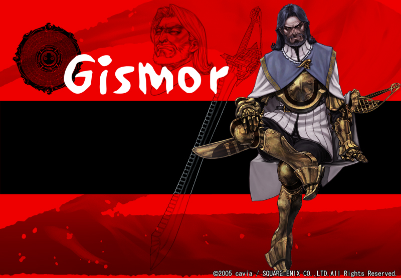

Gismor
Sex Male Age 44 Height 194cm (cast.立木 文彦
現・封印騎士団長。三年前より、騎士団長の座につく。世界を手中に収めること、這い上がることに全てを捧げ生き抜いてきた男。
過去、奴隷同様の生活に嫌気が差し、権力と地位を求めて暗躍する。その際、様々なことでさんざん手を汚し、さらに、別人の名と顔をもって封印騎士団にもぐりこむ。この集団が権力への近道だから、ただそれだけの理由で。
彼にとって世界は守るべきものではなく、手中におさめる対象に過ぎない。そして、騎士団では「力こそ全て。強者が弱者を支配できる。」という強い信念を元に恐怖政治を敷き統制を図る。その為なら、性格的に問題のあるザンポ、ハンチ、ヤハといった契約者達を取り込むのも厭わない。
オローが光なら、ジスモアは影。人徳があり正義感にあふれていた前団長オローに対して羨望と憎悪を持っていた。自身も契約者のようだが、契約対象や能力は謎に包まれている。ジスモア自身にとって人としての尊厳や、人が人であることなどはもやは唾棄すべきことに過ぎない。
「全てを手中に収めること」それがジスモア自身の存在理由なのだ。